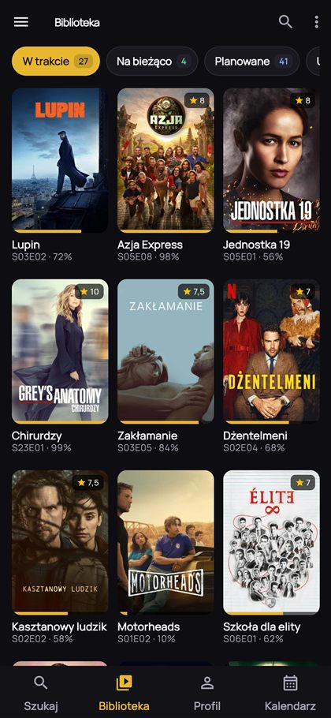

← All apps


Seenit
available in storesTrack TV shows, movies and premieres.
Seenit (Polish name: Seansownik) is a simple way to remember what you have watched, what you are watching now and what you want to see next.
- Movie and TV libraryAdd titles as Planned, Watching, Up to date, Completed or Dropped.
- Episode progressTick off episodes one by one or a whole season at once and see what is next.
- Premiere calendarUpcoming episodes and releases from your library, with optional reminders.
- Ratings and statsRate from 0 to 10, see your watch time, favourite genres and your year in numbers.
- Where to watchCheck which streaming services offer a title in your country.
- In sync and privateSyncs across your devices, works offline, no ads.

Movie and TV data is provided by The Movie Database (TMDb). This app uses the TMDb API but is not endorsed or certified by TMDb.
Support
Questions, problems or feedback: support@vonmi.app